| 日付 | 2017年3月5日（日） |
|---|---|
| メンバー | 家族（長女・6歳、長男・3歳） |
| アクセス | 車 |
妻が本日は自宅で仕事をしているため、子供を連れだして遊びに出かけることにする。
近くの公園だとあまり時間をつぶせないため、少し遠出してあいかわ公園に行くことにする。
以前、南山に登った時に少し遊んだ公園で、時間がある時にもう1回来ようと思っていた。
あいかわ公園に到着。まずは目を引く巨大なネットツリーにとりつく。
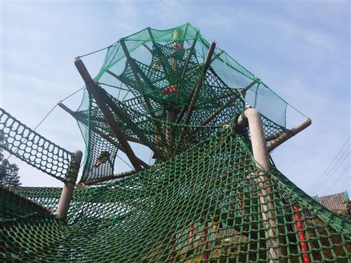
ネットにつかまって、どんどん上に登っていく。
昔はあまり上手に登れていなかったが、だいぶスムーズに登れるようになった。
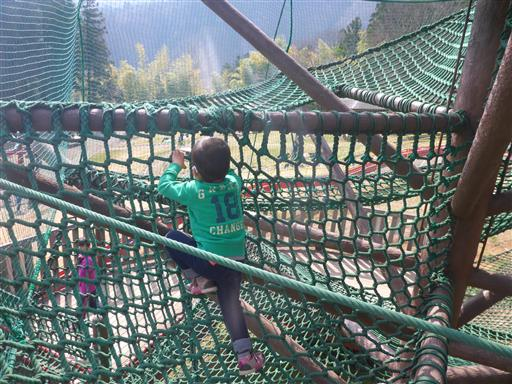
ネットツリーの中腹からトンネルを潜っていくと別の遊具と繋がっている。
狭くて追いかけるのが大変だ。
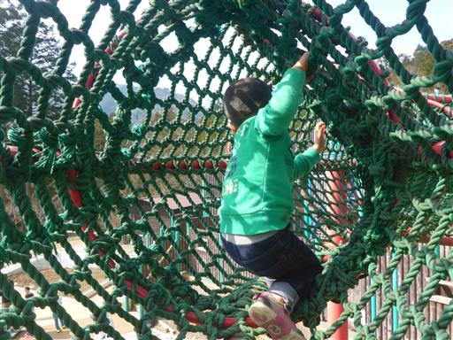
たどり着いたのは迷路型の巨大遊具。
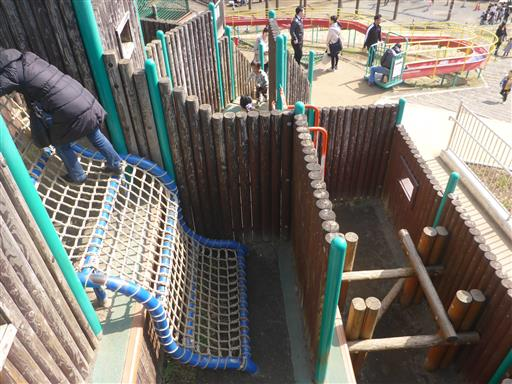
ネットを登ったり、
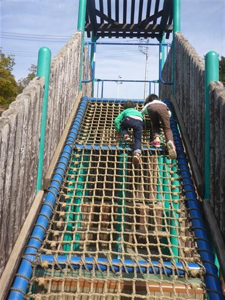
下に潜ったり、
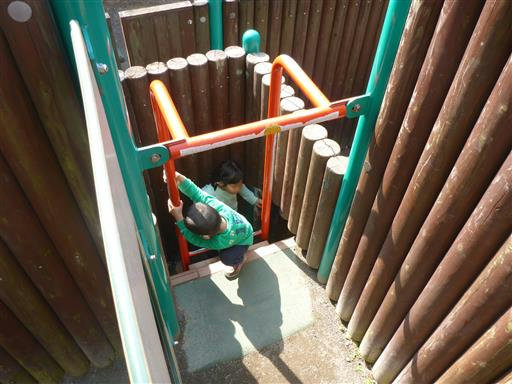
ロープを乗り越えたり、潜ったり、
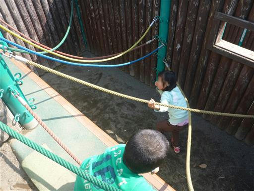
障害物を乗り越えたり、
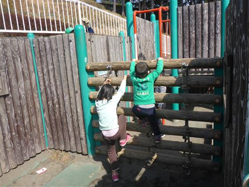
太鼓橋を渡ったり、
本当に色々な仕掛けがあって面白い遊具だ。
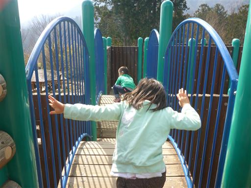
上に登って遊具の一角を見下ろす。
迷路は複雑に入り組んでいるので、一度子供たちを見失うと発見は困難だ。
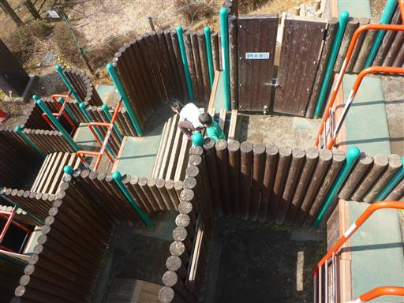
巨大迷路遊具で一通り遊んだら、そばにあるアスレチックに挑戦。
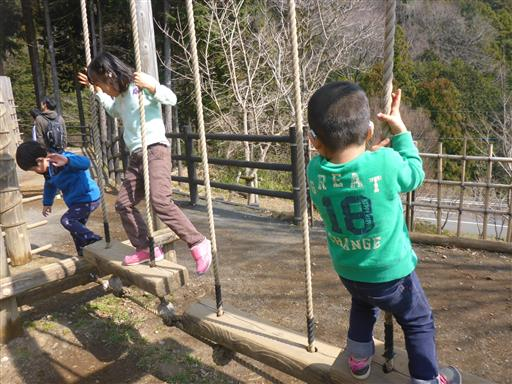
娘にはちょうど良い難易度のようで、順に挑戦していっている。
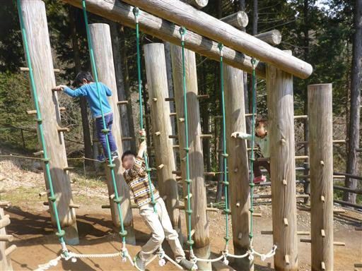
息子は早々に諦めて、簡単なアスレチックを勝手に登っていく。
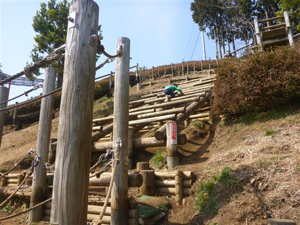
公園の遊具の全体像。手前に見えるのはローラー滑り台で、これも人気遊具だ。
今日は晴れ渡っていて気持ちが良い。

昼食をとって再び遊び始めたが、午後になるとだいぶ混雑してきた。
子供たちが汽車に乗りたいと言い出したので、乗り場まで移動することにする。
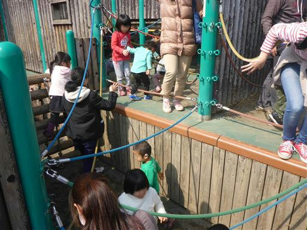
移動はダッシュ。疲れるのになぜ走るのだろう…？
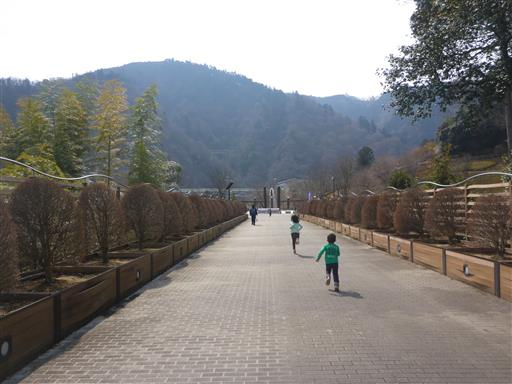
汽車（ロードトレイン）が来るまで45分程度あるので、周辺で遊んで時間をつぶすことにする。
こちらは水の遊び場なのだが、まだ寒いのでだれも遊んでいない。
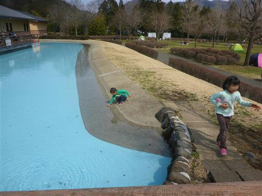
ふわふわドーム。とりあえず、ここで30分跳ねることにする。
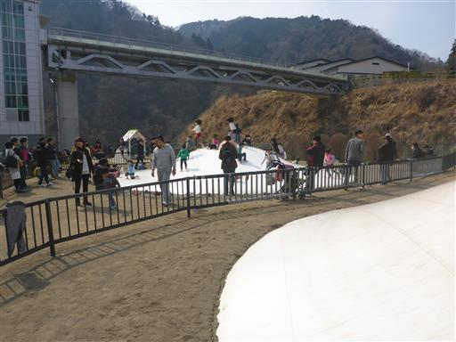
巨大エレベータと橋があるので、行ってみることにする。

上からは比較的小規模の石小屋ダムを見下ろすことができる。
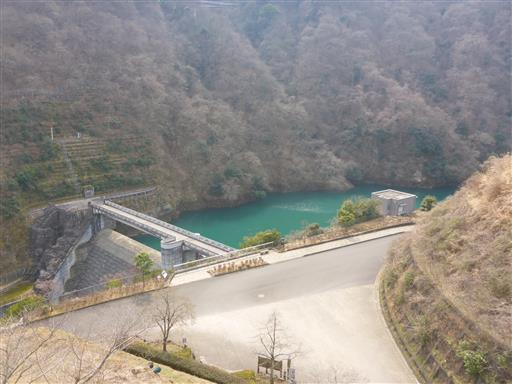
橋を渡ってたどり着いたのは小さなコンビネーション遊具。
見た目は美しい遊具だが、あまり遊べる部分がない。
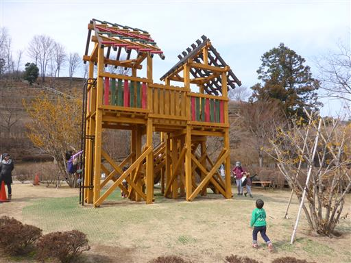
時間をつぶしたら乗り場に移動する。
10分ほど待つとロードトレインがやって来る。
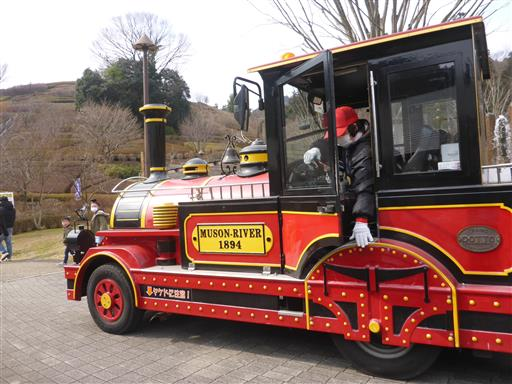
ロードトレインに乗って宮ヶ瀬ダムに移動。
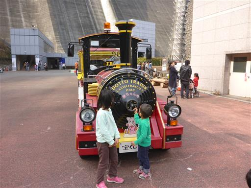
巨大な宮ヶ瀬ダム。3年前にも来た場所だが、相変わらず迫力がある。
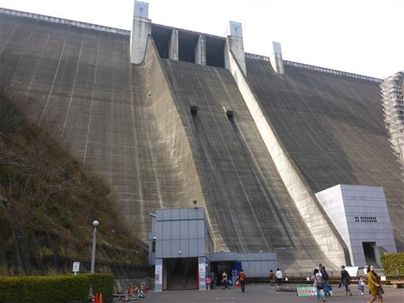
ケーブルカーで上まで行けるが、お金がもったいないため無料のエレベーターを利用する。
コンクリートの中の通路が、内部のエレベータに通じている。
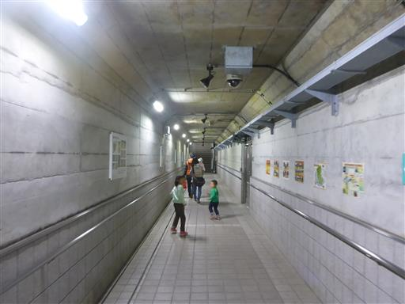
宮ヶ瀬ダムの上部に到着。広々としている。
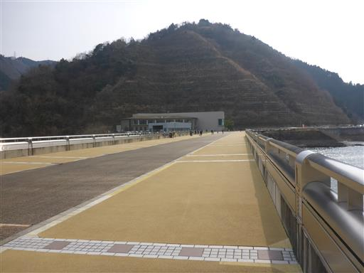
こちらは下流側。かなりの高度感がある。
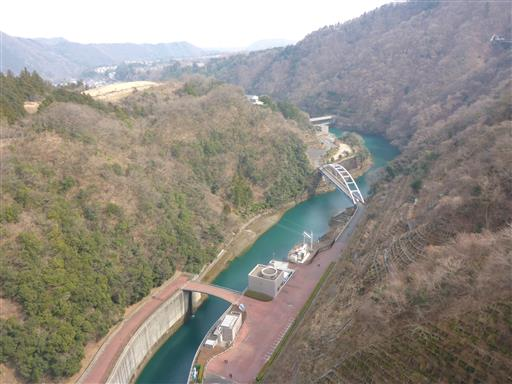
宮ヶ瀬ダムを見学する。水量は豊富だ。
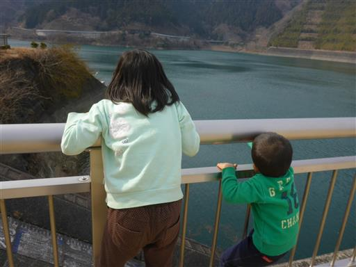
おやつを食べたら下に降りて、今度は歩いて公園に戻る。
大した距離ではないのだが、息子は疲れたみたいで途中で抱っこ…
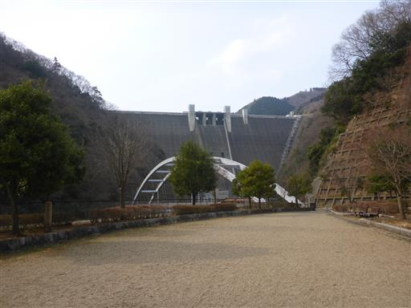
再び遊具に戻って遊び始めたのだが、かなりの大混雑。
そろそろ帰ろうと思っていたところで息子がお漏らしをしてしまい靴まで濡れてしまったので、
本日の遊びはこれにて終了。帰宅することにする。
遊具はどれも非常に面白く、思いっきり体を動かせた週末だった。
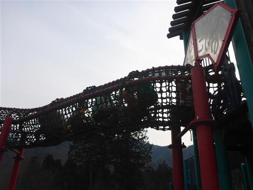